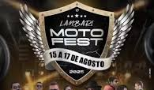

Descubra a cultura viva de Lambari
Feiras, tradições e eventos que conectam nossa cidade e fortalecem nossa identidade.
Próximos Eventos

2º roda de Congo de Lambari
14 de setembro
Coreto do Parque das Águas
A tradição segue viva! Desfile, música e celebração da cultura afro-brasileira.

Lambari Moto Fest
15 a 17 de agosto
Cassino do Lago
Encontro de motociclistas com shows, gastronomia e solidariedade. Um dos maiores eventos da cidade!

1ª Queima do Alho de Lambari
14 de setembro
Ao lado do Cassino
Música caipira, comida típica e tradição sertaneja mineira reunidas em uma grande festa.